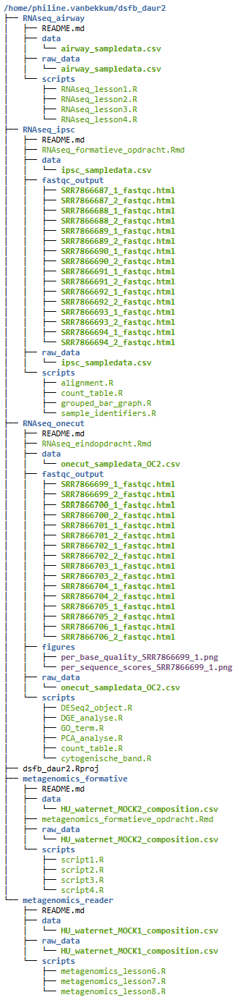

Guerilla analytics
The Guerrilla Analytics principles, written by Enda Ridge, offer a practical and hands-on framework for setting up a data management workflow. This framework is particularly useful for teams and helps create a structured work environment. Below, you can find an example of the Guerrilla Analytics principles applied to a past project.

(#fig:querilla analytics)Figure 1. Guerilla analytics applied to a past project.
Below you can also find the structure of this bookdown project following the Guerrilla Analytics principle.